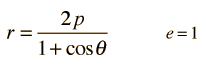

A parabola is a conic section formed by a slice that meets condition that the eccentricity is e=1.

The symbol p represents the distance of closest approach to the single focus.
Each of the conic sections can be described in terms of a semimajor axis a and an eccentricity e. Representative values for these parameters are shown along with the types of orbits which are associated with them.